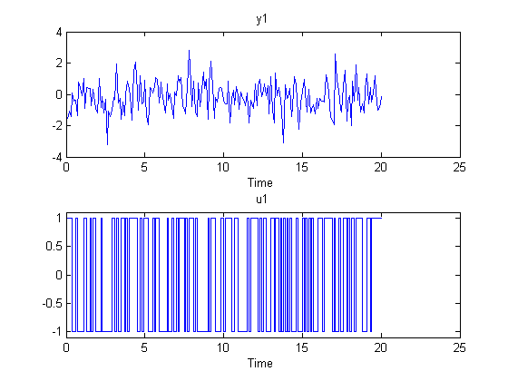
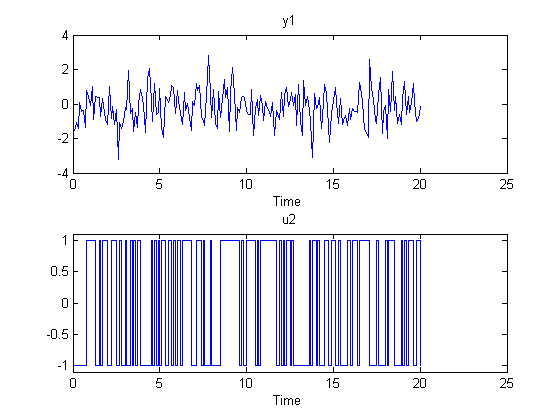
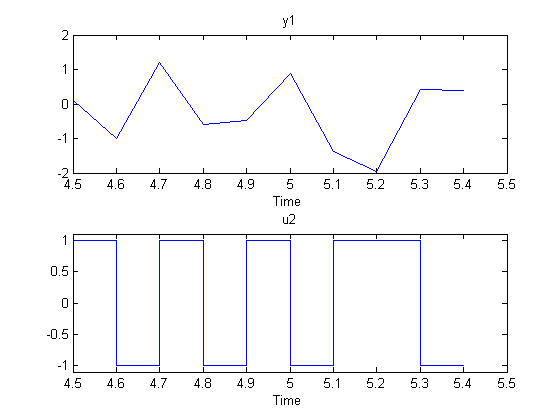
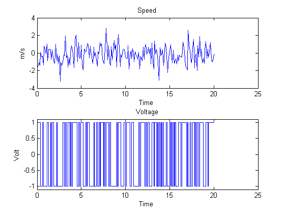
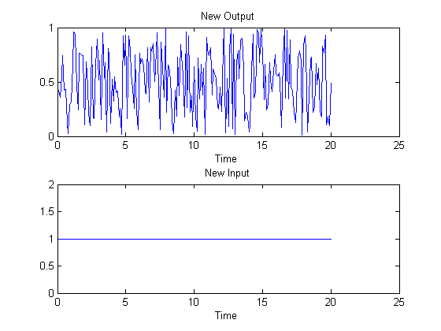
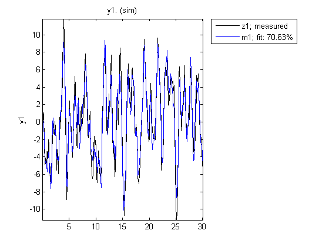

Data and Model Objects in System Identification Toolbox™
System identification is about building models from data. A data set is characterized by several pieces of information: The input and output signals, the sampling interval, the variable names and units, etc. Similarly, the estimated models contain information of different kinds - estimated parameters, their covariance matrices, model structure and so on.
This means that it is suitable and desirable to package relevant information around data and models into objects. System Identification Toolbox™ contains a number of such objects, and the basic features of these are described in this demo. More details and complete lists of properties are found by typing the command idprops.
Contents
The IDDATA Object
First create some data:
u = sign(randn(200,2)); % 2 inputs y = randn(200,1); % 1 output ts = 0.1; % The sampling interval
To collect the input and the output in one object do
z = iddata(y,u,ts);
The data information is displayed by just typing its name:
z
Time domain data set with 200 samples.
Sampling interval: 0.1
Outputs Unit (if specified)
y1
Inputs Unit (if specified)
u1
u2
The data is plotted as iddata by the plot command, as in plot(z). Press a key to continue and advance between the subplots. Here, we plot the channels separately:
plot(z(:,1,1)) %Data subset with Input 1 and Output 1.
 plot(z(:,1,2)) %Data subset with Input 2 and Output 1.
 To retrieve the outputs and inputs, use
u = z.u; % or, equivalently u = get(z,'u'); y = z.y; % or, equivalently y = get(z,'y');
To select a portion of the data:
zp = z(48:79);
To select the first output and the second input:
zs = z(:,1,2); % The ':' refers to all the data time points.
The sub-selections can be combined:
plot(z(45:54,1,2)) %samples 45 to 54 of response from second input to the first output.
 The channels are given default names 'y1', 'u2', etc. This can be changed to any values by
set(z,'InputName',{'Voltage';'Current'},'OutputName','Speed');
Equivalently we could write
z.inputn = {'Voltage';'Current'}; % Autofill is used for properties
z.outputn = 'Speed'; % Upper and lower cases are also ignored
For bookkeeping and plots, also units can be set:
z.InputUnit = {'Volt';'Ampere'};
z.OutputUnit = 'm/s';
z
Time domain data set with 200 samples.
Sampling interval: 0.1
Outputs Unit (if specified)
Speed m/s
Inputs Unit (if specified)
Voltage Volt
Current Ampere
All current properties are (as for any object) obtained by get:
get(z)
ans =
Domain: 'Time'
Name: ''
OutputData: [200x1 double]
y: 'Same as OutputData'
OutputName: {'Speed'}
OutputUnit: {'m/s'}
InputData: [200x2 double]
u: 'Same as InputData'
InputName: {2x1 cell}
InputUnit: {2x1 cell}
Period: [2x1 double]
InterSample: {2x1 cell}
Ts: 0.1000
Tstart: []
SamplingInstants: [200x0 double]
TimeUnit: ''
ExperimentName: 'Exp1'
Notes: {}
UserData: []
In addition to the properties discussed so far, we have 'Period' which denotes the period of the input if periodic Period = inf means a non-periodic input:
z.Period
ans = Inf Inf
The intersample behavior of the input may be given as 'zoh' (zero-order-hold, i.e. piecewise constant) or 'foh' (first- order-hold, i.e., piecewise linear). The identification routines use this information to adjust the algorithms.
z.InterSample
ans =
'zoh'
'zoh'
To see all the properties, and their assignable values use (as for any object) the set command:
set(z)
ans =
Domain: ''Time'/'Frequency''
Name: 'String'
OutputData: 'N-by-Ny matrix or 1-by-Ne cell array '
y: 'Same as OutputData'
OutputName: 'Ny-by-1 cell array of strings'
OutputUnit: 'Ny-by-1 cell array of strings'
InputData: 'N-by-Nu matrix or 1-by-Ne cell array'
u: 'Same as InputData'
InputName: 'Nu-by-1 cell array of strings'
InputUnit: 'Nu-by-1 cell array of strings'
Period: 'Nu-by-1 matrix of input periods (inf: non-periodic)'
InterSample: 'Nu-by-1 cell array: 'zoh'/'foh'/'bl''
Ts: [1x54 char]
Tstart: 'Scalar (Starting time)'
SamplingInstants: 'N-by-1 matrix (leave empty if equidistant sampling)'
TimeUnit: 'String'
ExperimentName: '1-by-Ne cell array (Ne = No of experiments)'
Notes: 'Cell array of strings'
UserData: 'Arbitrary'
Type "idprops", or "idprops iddata", for more details.
You can add channels (both input and output) by "horizontal concatenation", i.e. z = [z1 z2]:
z2 = iddata(rand(200,1),ones(200,1),0.1,'OutputName','New Output',... 'InputName','New Input'); z3 = [z,z2]
Time domain data set with 200 samples.
Sampling interval: 0.1
Outputs Unit (if specified)
Speed m/s
New Output
Inputs Unit (if specified)
Voltage Volt
Current Ampere
New Input
Let us plot some of the channels of z3:
plot(z3(:,1,1)) % Data subset with Input 2 and Output 1.
 plot(z3(:,2,3)) % Data subset with Input 2 and Output 3.
 Generating Inputs
The command idinput generates typical input signals.
u = idinput([30 1 10],'sine'); % 10 periods of 30 samples u = iddata([],u,1,'Period',30) % Making the input an IDDATA object.
Time domain data set with 300 samples.
Sampling interval: 1
Inputs Unit (if specified)
u1
SIM applied to an iddata input delivers an iddata output. Let us use sim to obtain the response of an estimated model m using the input u:
m = idpoly([1 -1.5 0.7],[0 1 0.5]); % This creates a model; see below. y = sim(m,u,'noise') % y is the simulated response produced as an iddata object
Time domain data set with 300 samples.
Sampling interval: 1
Outputs Unit (if specified)
y1
The simulation input u and the output y may be combined into a single iddata object as follows:
z5 = [y u] % The output-input iddata.
Time domain data set with 300 samples.
Sampling interval: 1
Outputs Unit (if specified)
y1
Inputs Unit (if specified)
u1
More about the iddata object is found under help iddata and idprops iddata.
The IDMODEL Objects
All models are delivered as MATLAB® objects. There are a few different objects depending on the type of model used, but this is mostly transparent.
load iddata1 m = armax(z1,[2 2 2 1]); % This creates an ARMAX model, delivered as an IDPOLY object
All relevant properties of this model are packaged as one object (here, idpoly), which is derived from the idmodel object. To display it just type its name:
m
Discrete-time IDPOLY model: A(q)y(t) = B(q)u(t) + C(q)e(t)
A(q) = 1 - 1.531 q^-1 + 0.7296 q^-2
B(q) = 0.943 q^-1 + 0.5218 q^-2
C(q) = 1 - 1.059 q^-1 + 0.1967 q^-2
Estimated using ARMAX on data set z1
Loss function 1.08559 and FPE 1.13005
Sampling interval: 0.1
Many of the model properties are directly accessible
m.a % The A-polynomial
ans =
1.0000 -1.5314 0.7296
m.nc % The order of the C-polynomial
ans =
2
A list of properties is obtained by get:
get(m)
ans =
a: [1 -1.5314 0.7296]
b: [0 0.9430 0.5218]
c: [1 -1.0591 0.1967]
d: 1
f: 1
da: [0 0.0180 0.0147]
db: [0 0.0608 0.0783]
dc: [0 0.0608 0.0597]
dd: 0
df: 0
na: 2
nb: 2
nc: 2
nd: 0
nf: 0
nk: 1
InitialState: 'Auto'
Name: ''
Ts: 0.1000
InputName: {'u1'}
InputUnit: {''}
OutputName: {'y1'}
OutputUnit: {''}
TimeUnit: ''
ParameterVector: [6x1 double]
PName: {}
CovarianceMatrix: [6x6 double]
NoiseVariance: 1.1083
InputDelay: 0
Algorithm: [1x1 struct]
EstimationInfo: [1x1 struct]
Notes: {}
UserData: []
nf = 0, nd = 0 denote orders of a general linear model, of which the ARMAX model is a special case.
EstimationInfo contains information about the estimation process:
m.es % Autofill of properties is used, so that "es" is a shortcut for "EstimationInfo".
ans =
Status: 'Estimated model (PEM)'
Method: 'ARMAX'
LossFcn: 1.0856
FPE: 1.1300
DataName: 'z1'
DataLength: 300
DataTs: 0.1000
DataDomain: 'time'
DataInterSample: {'zoh'}
WhyStop: 'Near (local) minimum, (norm(g) < tol).'
UpdateNorm: 0.0019
LastImprovement: 0.0019
Iterations: 3
InitialState: 'Zero'
Warning: ''
The Algorithm property contains many properties that affect the estimation algorithm:
m.algorithm
ans =
Focus: 'Prediction'
MaxIter: 20
Tolerance: 0.0100
LimitError: 0
MaxSize: 'Auto'
SearchMethod: 'Auto'
Criterion: 'det'
Weighting: 1
FixedParameter: []
Display: 'Off'
N4Weight: 'Auto'
N4Horizon: 'Auto'
Advanced: [1x1 struct]
All the algorithm properties can be set in the estimation command: (see idprops idmodel algorithm for a complete explanation)
m1 = armax(z1,[2 2 2 1],'maxiter',5,'search','LM'); % max 5 iterations, using the Levenberg-Marquard search direction
To obtain on-line information about the minimization, use the property 'Display' with possible values 'Off', 'On', and 'Full':
m1 = armax(z1,[2 2 2 1],'Display','On');
Criterion: Determinant minimization
Scheme: Nonlinear least squares with automatically chosen line search method
------------------------------------------------------------------------------------------
Norm of First-order Improvement (%)
Iteration Cost step optimality Expected Achieved Bisections
------------------------------------------------------------------------------------------
0 1.12961 - 271 1.98 - -
1 1.10671 0.125 47.2 1.98 2.03 0
2 1.10646 0.00823 7.45 0.0187 0.023 0
3 1.10644 0.00206 3.17 0.00142 0.00194 0
------------------------------------------------------------------------------------------
Variants of IDMODEL - IDPOLY, IDPROC, IDSS and IDGREY
There are several variants ("children") of the idmodel object. The one above is an example of the idpoly version for polynomial type models. Different variants of polynomial-type models, such as Box-Jenkins models, Output Error models, ARMAX models etc are obtained using the corresponding estimators - bj, oe, armax, arx etc. All of these are presented as idpoly objects.
Other variants are idss for state-space models; idgrey for user-defined structured state-space models; idarx for multi-output ARX-models, and idproc for process models (gain+delay+static gain).
The commands to evaluate the model: bode, step, zpplot, compare, etc, all operate directly on the model objects, for example:
compare(z1,m1)
Transformations to state-space, transfer function and zeros/poles are obtained by ssdata, tfdata and zpkdata:
[num,den] = tfdata(m1,'v')
num =
0 0.9430 0.5218
den =
1.0000 -1.5314 0.7296
The 'v' means that num and den are returned as vectors and not as cell arrays. The cell arrays are useful to handle multivariable systems.
Transforming IDMODELs into LTI Objects of Control System Toolbox™
The objects also connect directly to the Control System Toolbox™ model objects, like tf, ss, and zpk, and can be converted into these LTI objects, if Control System Toolbox is installed. For example, tf converts an idmodel object into a tf object.
if iscstbinstalled % check if Control System Toolbox is installed tfm = tf(m1) %convert IDPOLY model m1 into a TF object end
Transfer function from input "u1" to output "y1":
0.943 z + 0.5218
----------------------
z^2 - 1.531 z + 0.7296
Transfer function from input "v@y1" to output "y1":
1.053 z^2 - 1.115 z + 0.2071
----------------------------
z^2 - 1.531 z + 0.7296
Sampling time: 0.1
Input groups:
Name Channels
Measured 1
Noise 2
Note that the model m1 really has two inputs, the measured (control) input u1 and the noise input e. When converting the IDMODEL object to the Control Systems Toolbox's LTI objects, the noise input is represented as a regular input with the default name v@y1. To just represent the measured input, use:
if iscstbinstalled tfm = tf(m1,'m') % 'm' for 'measured'. end
Transfer function from input "u1" to output "y1": 0.943 z + 0.5218 ---------------------- z^2 - 1.531 z + 0.7296 Sampling time: 0.1
Additional Information
For more information on identification of dynamic systems with System Identification Toolbox visit the System Identification Toolbox product information page.